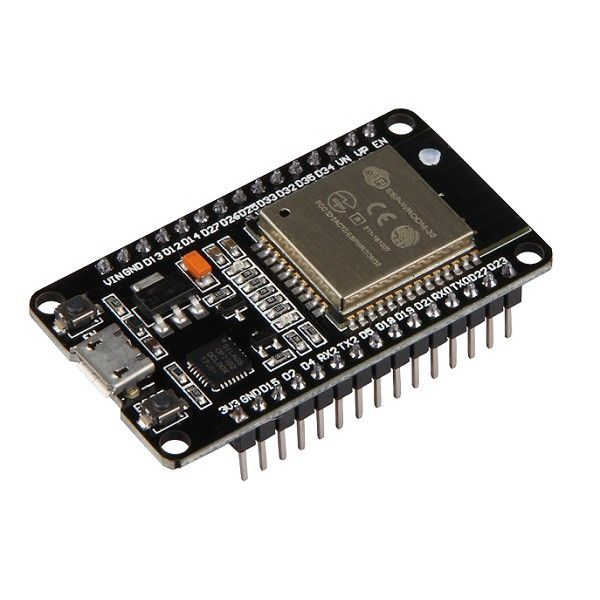

EcoBin - Smart Waste Management
Environment, Cleanliness, Optimization, Bin, Innovation, and Notifications.
Learn MoreEnvironment, Cleanliness, Optimization, Bin, Innovation, and Notifications.
Learn More
Hands-free trash disposal with proximity sensors.
Monitor trash levels and control the bin remotely with the Blynk app.
Real-time updates of trash levels sent directly to your smartphone.
This project utilizes simple components to create a smart trash can that operates with minimal interaction, enhancing convenience and hygiene.
The microcontroller board that controls the entire system.
Used for measuring the distance to detect when the trash can needs to open.

Controls the motion to open and close the trash can lid.

Used to connect and organize components without soldering.

Provide the necessary connections between components.

Provides the electrical power needed for all components to function.

The main structure that serves as the trash can for the project.

.jpg)
EcoBin circuit diagram shows the key components used for IoT-based waste management. It includes sensors for trash level monitoring and Wi-Fi module for connectivity.
This diagram shows how the waste level sensor communicates with the central control unit and sends alerts to the Blynk app when the bin is full.
.jpg)

A comfortable and secure environment for families to live, relax, and work.
Workspaces designed for productivity, collaboration, and a professional atmosphere.
Public areas that serve the community, like parks, malls, and libraries.
Spaces dedicated to dining and healthcare services, ensuring safety and comfort.